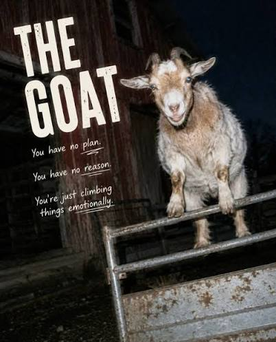

- Математическая нумерация версий
- Собственный банк для выплаты наград
- Борьба за концентрацию
- Любовь к органной музыке

Интересные факты
Математическая нумерация версий
Версии созданных им программ приближаются к математическим константам. Каждое новое обновление издательской системы TeX получает номер, в который добавляется следующая цифра числа π (сейчас актуальна версия 3.141592653). После смерти автора проект будет заморожен, а финальная версия навсегда станет числом π. Программа для создания шрифтов METAFONT обновляется аналогично, но стремится к числу e (основанию натурального логарифма).
Собственный банк для выплаты наград
Знаменитые «чеки Кнута» за найденные ошибки в его книгах оценивались в 1 шестнадцатеричный доллар ($2.56). Однако из-за частых случаев мошенничества со стороны сторонних банков и ради защиты персональных данных своих читателей Кнут в 2006 году основал собственный вымышленный банк — The San Serriffe Bank. Теперь победители получают официальные наградные сертификаты от этого «банка», которые программисты бережно хранят в рамке как знак высшего признания.
Борьба за концентрацию
Кнут категорически не пользуется электронной почтой с 1 января 1990 года. По его словам, его секретарю требуется слишком много времени на сортировку писем, а сам он предпочитает глубоко концентрироваться на долгосрочных задачах, а не отвечать на сиюминутные запросы. Написать ему можно только бумажным письмом через обычную почту.
Любовь к органной музыке
Кнут — увлеченный органист. В его доме установлен огромный кастомный трубный орган, конфигурацию и чертежи которого он рассчитал сам. Более того, Кнут написал масштабное музыкальное произведение для органа под названием «Fantasia Apocalyptica», в основу которого легли математические паттерны и библейские тексты Откровения Иоанна Богослова.